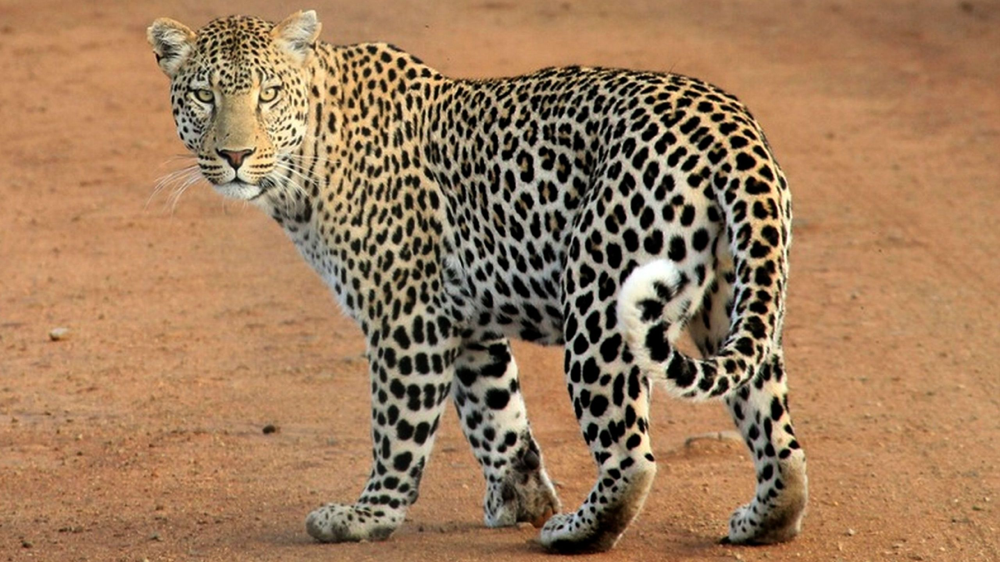

Photography
Photography is the art of capturing film using a camera. Photos or photographs are the result of photography.Photos create good memories and we'll have a select of the best photos of the Big Five game animals.
The Big Five of Wildlife
The Big five game animals include the lion, leopard,elephant and buffalo. The term Big Five was originally used by big game hunters. They used this term in reference to the five most difficult animals in Africa to hunt on foot. These days it is widely used by safari tour operators. Here is a brief description of the Big Five.
The Lion
The lion is native to Africa and India. It has a muscular, deep-chested body and a hairy tuft at the end of its tail. Adult male lions have a prominent mane and are larger than their female counterparts.Lions are social species and form groups called prides.
.jpg)
The African Leopard
The African leopard is native to many African countries. It is widely distributed in most of the sub-Saharan countries.THe leopard exhibits great variation in coat color,greatly influenced by its location and habitat
The Rhinoceros
The Rhinoceros, commonly abbreviated to rhino is native to Africa, South and South East Asia. They are very large animals and can weigh at least one tonne in adulthood. They are widely hunted for their horns and skin which is used to make ornaments and also in traditional medicine. Wildlife conservancies conclusively regard the rhino as critically endangered.

The Elephant
The elephant is native to Africa and India. It is the largest of land animals and weigh up to six tonnes. The elephant's population has greatly reduced due to habitat loss and fragmentation and also poaching for their illegal trade.
The Buffallo
The buffalo's horns are its characteristic feature: they have a fused bases,forming a continuous bone shield across the top of the head referred to as a "boss". It is widely regarded as one of the most dangerous animals on the African continent; and according to some estimates, it gores, tramples and kills over 200 people a year!